Drag to look around
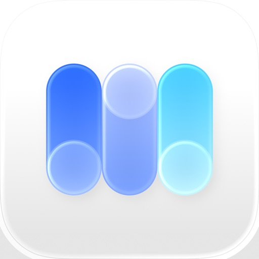
MovyDaily wallpapers, curated collections, and a Studio for creating your own.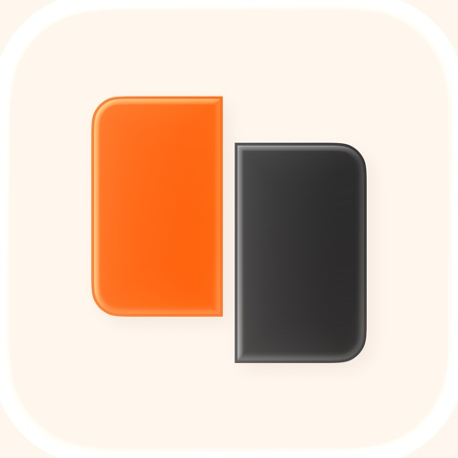
SequencePhotographs, turned into zines and photo books.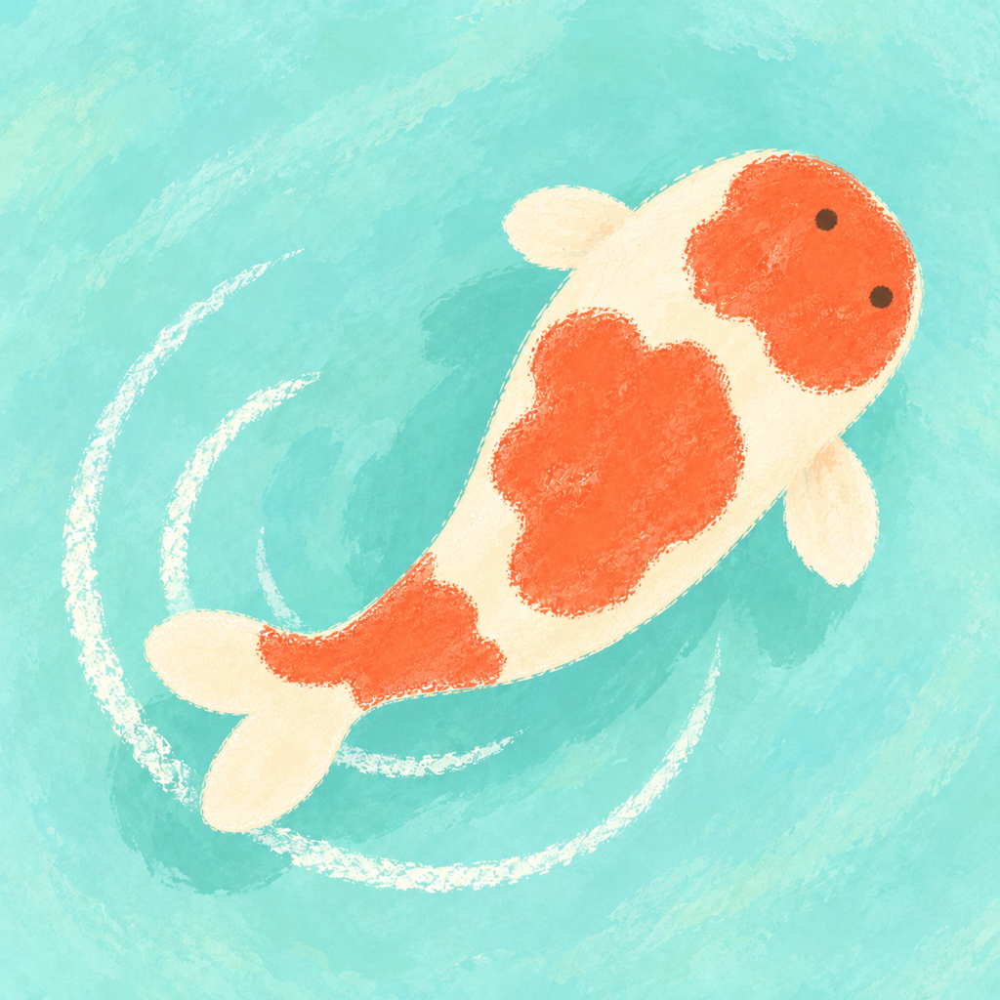
DaypondA hand-drawn koi pond for focus, breathing, and winding down.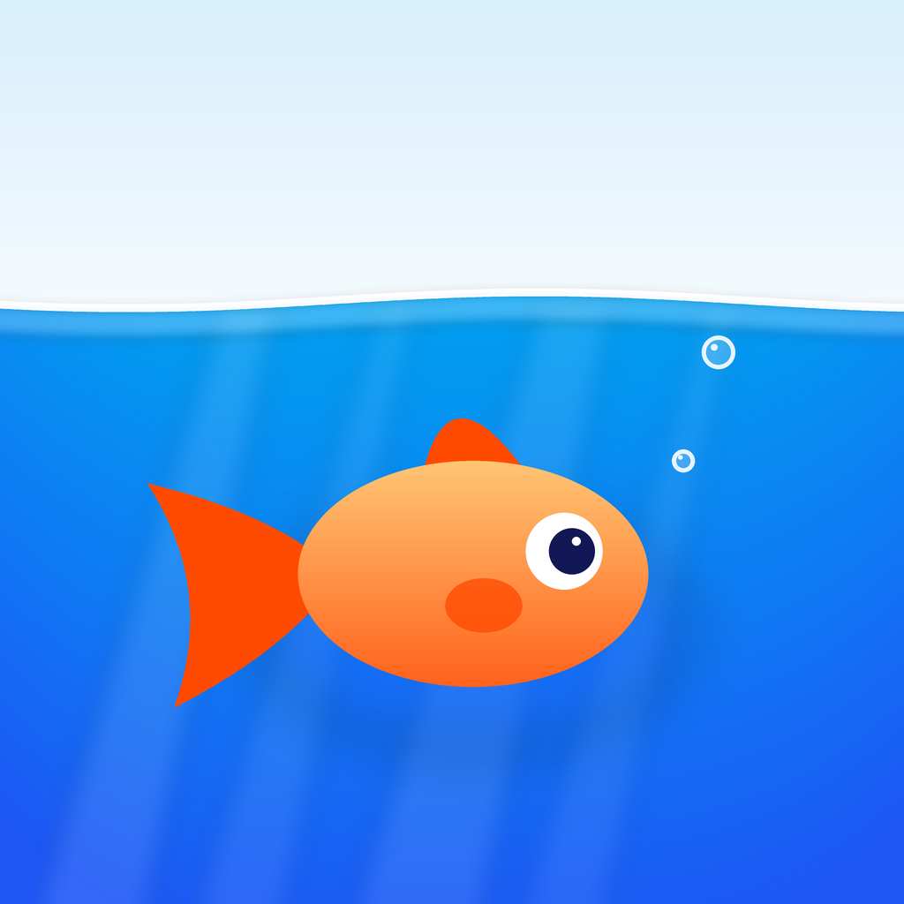
FinwordsLearn English with a pet goldfish, at your own pace.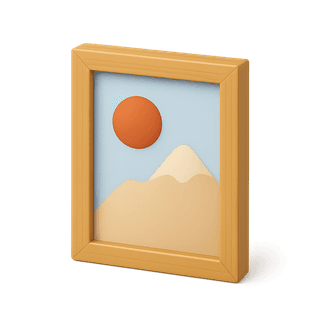
WallpapersPictures for that desktop. Pick one and set it.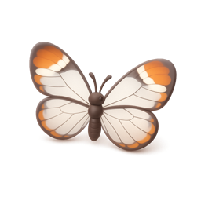
Bug ExplorerA curio cabinet of 60 specimens. Drag to roam, tap to inspect.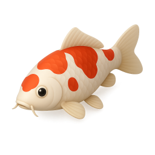
Koi PondFlowing koi that respond to your cursor.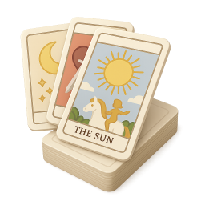
Cards of AnswersA tarot-inspired decision tool with card animations.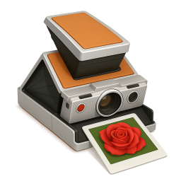
JSON PromptsA gallery of AI image prompts on an infinite canvas.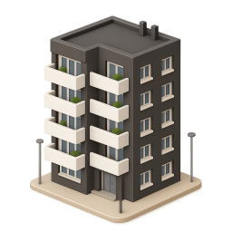
Between FloorsVertical swipe stories for English learners.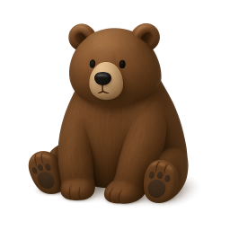
AtticusA living notebook of mistakes, humanity, and letters.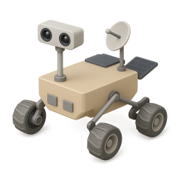
Postcards from MarsA 3D mission log with rover photos and field diaries.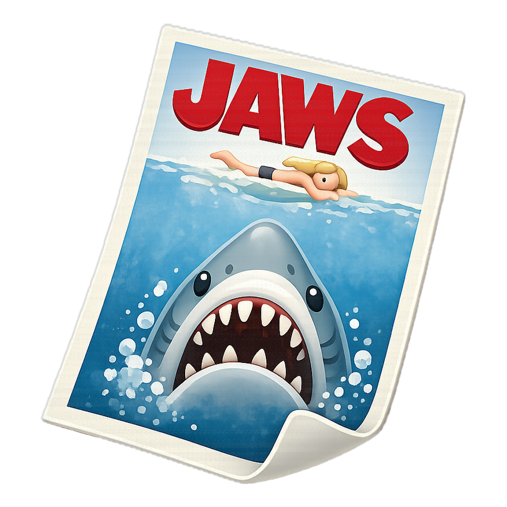
Movy ReelA slow cinema journal, films reimagined as posters.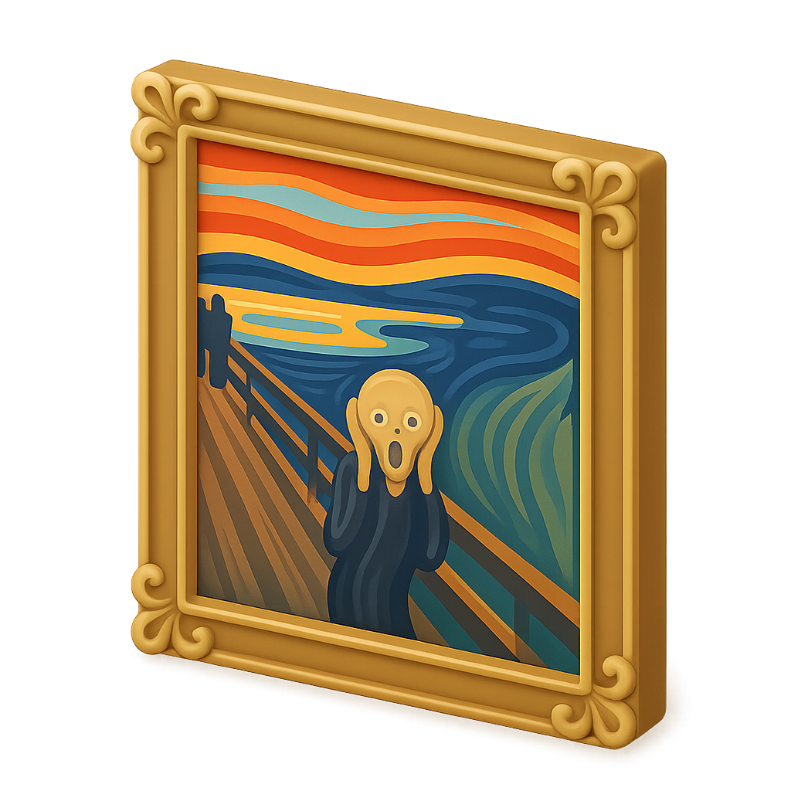
ArtuzzleA relaxing puzzle built from famous artworks.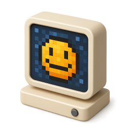
Pixel DailiesDaily pixel-art challenges and a community gallery.